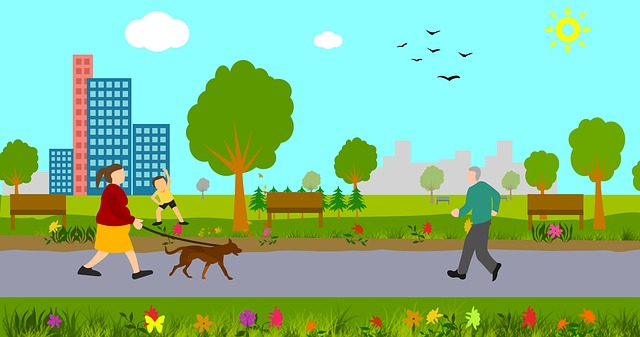

Outcome

The major object of the project is improving individual health. If citizens' lifestyles become healthier, it results in not only improving the quality of individual life but also an economic benefit. One example of this is many people undergo difficulties physically and mentally due to severe diseases like cancer, heart diseases and depression. The major cause of diseases is obesity and overweight. It is possible to improve the quality of life if people make efforts to keep healthy by using the application. Another example of this is some people cannot work due to extreme obesity caused by a lack of mobility. It leads to a decline in the workforce and the financial problem to an individual. In terms of economics, it may be beneficial to not only individuals but society if people maintain a healthy lifestyle.